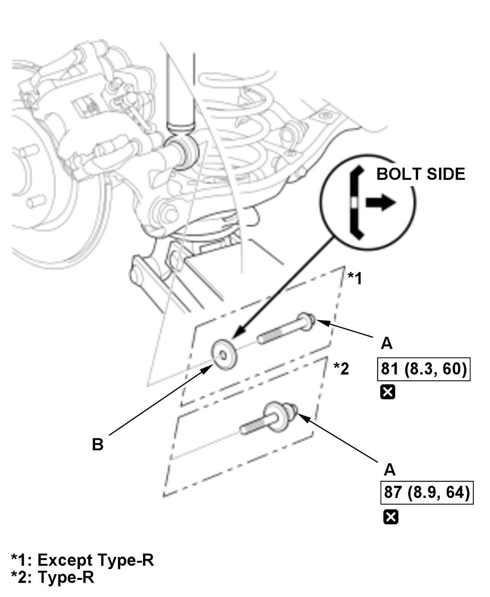
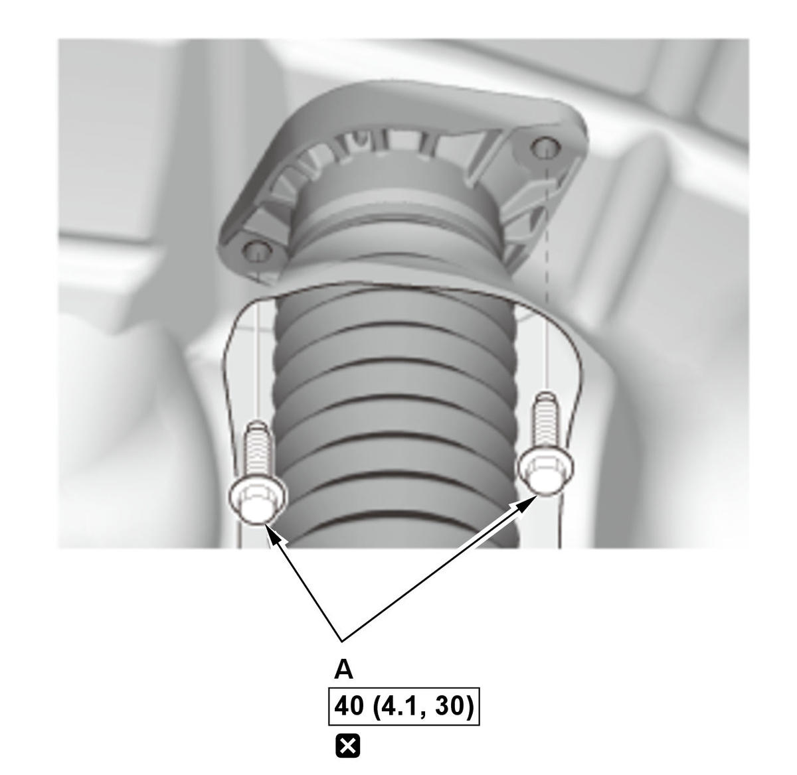

Removal and Installation
NOTE:
- How to read the torque specifications .
- Refer to the Exploded View as needed during the following procedures.
- Unless otherwise indicated, illustrations used in the procedure are for 2/4-door without adaptive damper system.
- Vehicle - Lift
- Rear Wheel - Remove
- Damper Items - Remove (With Adaptive Damper System)
Si
1. Disconnect the connector (A).
2. Remove the clips (B).
Type-R
1. Disconnect the connector (A) as shown.
2. Remove the clip (B).
- Lower Arm B - Support
1. Position a floor jack under lower arm B. 2. Raise the floor jack until the suspension begins to compress.
- Damper - Remove

Courtesy of HONDA, U.S.A., INC.1. Remove the damper lower mounting bolt (A) and the washer (except Type-R) (B).
NOTE: Use the new flange nut during reassembly.
Courtesy of HONDA, U.S.A., INC.2. Remove the damper upper mounting bolts (A).
NOTE:- Do not let the damper/spring drop down under its own weight.
- Use a new flange bolts during reassembly.
3. Remove the damper unit (A).
NOTE:- Be careful not to damage the body.
- During installation, note these items.
-
- Install the damper unit in the body with the hole (B) facing outside.
- Loosely install the nuts and/or bolts to install the bushings, load the suspension with the vehicle's weight, and then tighten the nuts and/or bolts to the specified torque.
- All Removed Parts - Install
1. Install the parts in the reverse order of removal. - Wheel Alignment - Check